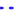

<!doctype html>
<html lang="en">
    <head>
        <meta charset="utf-8">
        <meta http-equiv="X-UA-Compatible" content="IE=edge">
        <meta name="viewport" content="initial-scale=1,user-scalable=no,maximum-scale=1,width=device-width">
        <meta name="mobile-web-app-capable" content="yes">
        <meta name="apple-mobile-web-app-capable" content="yes">
        <link rel="stylesheet" href="css/leaflet.css"><link rel="stylesheet" href="css/L.Control.Locate.min.css">
        <link rel="stylesheet" href="css/qgis2web.css"><link rel="stylesheet" href="css/fontawesome-all.min.css">
        <style>
        html, body, #map {
            width: 100%;
            height: 100%;
            padding: 0;
            margin: 0;
        }
        </style>
        <title></title>
    </head>
    <body>
        <div id="map">
        </div>
        <script src="js/qgis2web_expressions.js"></script>
        <script src="js/leaflet.js"></script><script src="js/L.Control.Locate.min.js"></script>
        <script src="js/leaflet.rotatedMarker.js"></script>
        <script src="js/leaflet.pattern.js"></script>
        <script src="js/leaflet-hash.js"></script>
        <script src="js/Autolinker.min.js"></script>
        <script src="js/rbush.min.js"></script>
        <script src="js/labelgun.min.js"></script>
        <script src="js/labels.js"></script>
        <script src="data/TrailDieng_1.js"></script>
        <script src="data/Fasilitas_2.js"></script>
        <script src="data/DTWDieng_3.js"></script>
        <script>
        var map = L.map('map', {
            zoomControl:true, maxZoom:28, minZoom:1
        }).fitBounds([[-7.250317641293526,109.87986746084681],[-7.199348850907518,109.98147492894725]]);
        var hash = new L.Hash(map);
        map.attributionControl.setPrefix('<a href="https://github.com/tomchadwin/qgis2web" target="_blank">qgis2web</a> &middot; <a href="https://leafletjs.com" title="A JS library for interactive maps">Leaflet</a> &middot; <a href="https://qgis.org">QGIS</a>');
        var autolinker = new Autolinker({truncate: {length: 30, location: 'smart'}});
        L.control.locate({locateOptions: {maxZoom: 19}}).addTo(map);
        var bounds_group = new L.featureGroup([]);
        function setBounds() {
        }
        map.createPane('pane_GoogleStreet_0');
        map.getPane('pane_GoogleStreet_0').style.zIndex = 400;
        var layer_GoogleStreet_0 = L.tileLayer('https://mt1.google.com/vt/lyrs=m&x={x}&y={y}&z={z}', {
            pane: 'pane_GoogleStreet_0',
            opacity: 1.0,
            attribution: '',
            minZoom: 1,
            maxZoom: 28,
            minNativeZoom: 0,
            maxNativeZoom: 18
        });
        layer_GoogleStreet_0;
        map.addLayer(layer_GoogleStreet_0);
        function pop_TrailDieng_1(feature, layer) {
            var popupContent = '<table>\
                    <tr>\
                        <td colspan="2">' + (feature.properties['Name'] !== null ? autolinker.link(feature.properties['Name'].toLocaleString()) : '') + '</td>\
                    </tr>\
                    <tr>\
                        <td colspan="2">' + (feature.properties['descriptio'] !== null ? autolinker.link(feature.properties['descriptio'].toLocaleString()) : '') + '</td>\
                    </tr>\
                    <tr>\
                        <td colspan="2">' + (feature.properties['Visual'] !== null ? '' : '') + '</td>\
                    </tr>\
                </table>';
            layer.bindPopup(popupContent, {maxHeight: 400});
        }

        function style_TrailDieng_1_0(feature) {
            switch(String(feature.properties['descriptio'])) {
                case 'Jalan Lingkungan':
                    return {
                pane: 'pane_TrailDieng_1',
                opacity: 1,
                color: 'rgba(39,33,223,1.0)',
                dashArray: '',
                lineCap: 'square',
                lineJoin: 'bevel',
                weight: 3.0,
                fillOpacity: 0,
                interactive: true,
            }
                    break;
                case 'Jalan Lokal':
                    return {
                pane: 'pane_TrailDieng_1',
                opacity: 1,
                color: 'rgba(39,33,223,1.0)',
                dashArray: '',
                lineCap: 'square',
                lineJoin: 'bevel',
                weight: 3.0,
                fillOpacity: 0,
                interactive: true,
            }
                    break;
                case 'Jalan Setapak':
                    return {
                pane: 'pane_TrailDieng_1',
                opacity: 1,
                color: 'rgba(39,33,223,1.0)',
                dashArray: '',
                lineCap: 'round',
                lineJoin: 'round',
                weight: 3.0,
                fillOpacity: 0,
                interactive: true,
            }
                    break;
                default:
                    return {
                pane: 'pane_TrailDieng_1',
                opacity: 1,
                color: 'rgba(39,33,223,1.0)',
                dashArray: '',
                lineCap: 'square',
                lineJoin: 'bevel',
                weight: 3.0,
                fillOpacity: 0,
                interactive: true,
            }
                    break;
            }
        }
        map.createPane('pane_TrailDieng_1');
        map.getPane('pane_TrailDieng_1').style.zIndex = 401;
        map.getPane('pane_TrailDieng_1').style['mix-blend-mode'] = 'normal';
        var layer_TrailDieng_1 = new L.geoJson(json_TrailDieng_1, {
            attribution: '',
            interactive: true,
            dataVar: 'json_TrailDieng_1',
            layerName: 'layer_TrailDieng_1',
            pane: 'pane_TrailDieng_1',
            onEachFeature: pop_TrailDieng_1,
            style: style_TrailDieng_1_0,
        });
        bounds_group.addLayer(layer_TrailDieng_1);
        map.addLayer(layer_TrailDieng_1);
        function pop_Fasilitas_2(feature, layer) {
            var popupContent = '<table>\
                    <tr>\
                        <td colspan="2">' + (feature.properties['id'] !== null ? autolinker.link(feature.properties['id'].toLocaleString()) : '') + '</td>\
                    </tr>\
                    <tr>\
                        <td colspan="2">' + (feature.properties['Nama'] !== null ? autolinker.link(feature.properties['Nama'].toLocaleString()) : '') + '</td>\
                    </tr>\
                    <tr>\
                        <td colspan="2">' + (feature.properties['Jenis'] !== null ? autolinker.link(feature.properties['Jenis'].toLocaleString()) : '') + '</td>\
                    </tr>\
                </table>';
            layer.bindPopup(popupContent, {maxHeight: 400});
        }

        function style_Fasilitas_2_0() {
            return {
                pane: 'pane_Fasilitas_2',
                radius: 4.0,
                opacity: 1,
                color: 'rgba(35,35,35,1.0)',
                dashArray: '',
                lineCap: 'butt',
                lineJoin: 'miter',
                weight: 1,
                fill: true,
                fillOpacity: 1,
                fillColor: 'rgba(238,182,61,1.0)',
                interactive: true,
            }
        }
        map.createPane('pane_Fasilitas_2');
        map.getPane('pane_Fasilitas_2').style.zIndex = 402;
        map.getPane('pane_Fasilitas_2').style['mix-blend-mode'] = 'normal';
        var layer_Fasilitas_2 = new L.geoJson(json_Fasilitas_2, {
            attribution: '',
            interactive: true,
            dataVar: 'json_Fasilitas_2',
            layerName: 'layer_Fasilitas_2',
            pane: 'pane_Fasilitas_2',
            onEachFeature: pop_Fasilitas_2,
            pointToLayer: function (feature, latlng) {
                var context = {
                    feature: feature,
                    variables: {}
                };
                return L.circleMarker(latlng, style_Fasilitas_2_0(feature));
            },
        });
        bounds_group.addLayer(layer_Fasilitas_2);
        map.addLayer(layer_Fasilitas_2);
        function pop_DTWDieng_3(feature, layer) {
            var popupContent = '<table>\
                    <tr>\
                        <td colspan="2">' + (feature.properties['Name'] !== null ? autolinker.link(feature.properties['Name'].toLocaleString()) : '') + '</td>\
                    </tr>\
                    <tr>\
                        <td colspan="2">' + (feature.properties['descriptio'] !== null ? autolinker.link(feature.properties['descriptio'].toLocaleString()) : '') + '</td>\
                    </tr>\
                    <tr>\
                        <td colspan="2">' + (feature.properties['Visual'] !== null ? '' : '') + '</td>\
                    </tr>\
                </table>';
            layer.bindPopup(popupContent, {maxHeight: 400});
        }

        function style_DTWDieng_3_0() {
            return {
                pane: 'pane_DTWDieng_3',
                radius: 6.0,
                opacity: 1,
                color: 'rgba(128,67,36,1.0)',
                dashArray: '',
                lineCap: 'butt',
                lineJoin: 'miter',
                weight: 2.0,
                fill: true,
                fillOpacity: 1,
                fillColor: 'rgba(234,36,6,1.0)',
                interactive: true,
            }
        }
        map.createPane('pane_DTWDieng_3');
        map.getPane('pane_DTWDieng_3').style.zIndex = 403;
        map.getPane('pane_DTWDieng_3').style['mix-blend-mode'] = 'normal';
        var layer_DTWDieng_3 = new L.geoJson(json_DTWDieng_3, {
            attribution: '',
            interactive: true,
            dataVar: 'json_DTWDieng_3',
            layerName: 'layer_DTWDieng_3',
            pane: 'pane_DTWDieng_3',
            onEachFeature: pop_DTWDieng_3,
            pointToLayer: function (feature, latlng) {
                var context = {
                    feature: feature,
                    variables: {}
                };
                return L.circleMarker(latlng, style_DTWDieng_3_0(feature));
            },
        });
        bounds_group.addLayer(layer_DTWDieng_3);
        map.addLayer(layer_DTWDieng_3);
        var baseMaps = {};
        L.control.layers(baseMaps,{' DTW Dieng': layer_DTWDieng_3,' Fasilitas': layer_Fasilitas_2,'Trail Dieng<br /><table><tr><td style="text-align: center;"></td><td>Jalan Lingkungan</td></tr><tr><td style="text-align: center;"></td><td>Jalan Lokal</td></tr><tr><td style="text-align: center;"></td><td>Jalan Setapak</td></tr><tr><td style="text-align: center;"></td><td></td></tr></table>': layer_TrailDieng_1,"Google Street": layer_GoogleStreet_0,}).addTo(map);
        setBounds();
        </script>
    </body>
</html>
